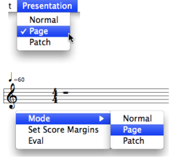
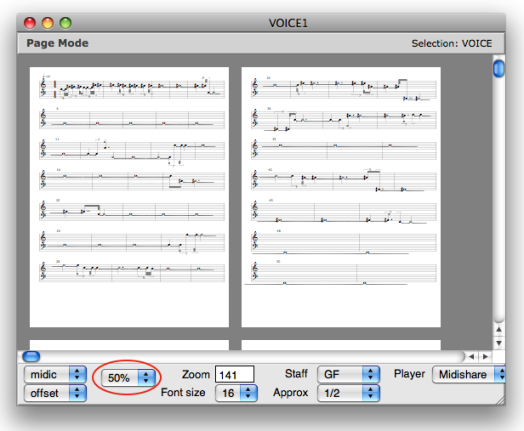
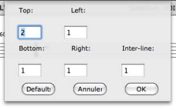
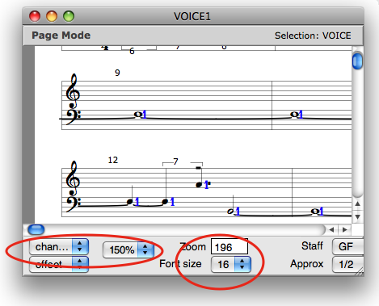

OpenMusic DocumentationHiérarchie de section : OM 6.6 User Manual > Score Objects > Score Editors > Page Mode
OpenMusic DocumentationHiérarchie de section : OM 6.6 User Manual > Score Objects > Score Editors > Page Mode
Navigation : page précédente | page suivante
Attention, votre navigateur ne supporte pas le javascript ou celui-ci à été désactivé. Certaines fonctionnalités de ce guide sont restreintes.
Page Mode
The content of objects can be displayed and edited – to a certain extent – on page mode . This is especially convenient as far as long sequences are concerned. The page mode is also very convenient to get a preview of an object and modify its page layout before printing.
Displaying Pages
Accessing Page Mode

|
To display a content on page mode
|
Page Size
The number of displayed pages can be modified via the page size menu.

Margins

|
To modify the page margins :
Margins values are also effective on |
Parameters Displaying and Edition
Legibility : Slots and Score
Parametric values can also be displayed via the usual upper and lower Editor Control menus.
Font size and zoom can be adjusted via the usual menus.

Parametric Values Edition
Slots cannot be edited.
Notes and chord can be moved or deleted, but new pitches cannot be entered in the score.
To print the score :
- select
File / Printin the main menu - press
Cmd+p.
Références :
Plan :
Navigation : page précédente | page suivante
A propos...(c) Ircam - Centre Pompidou